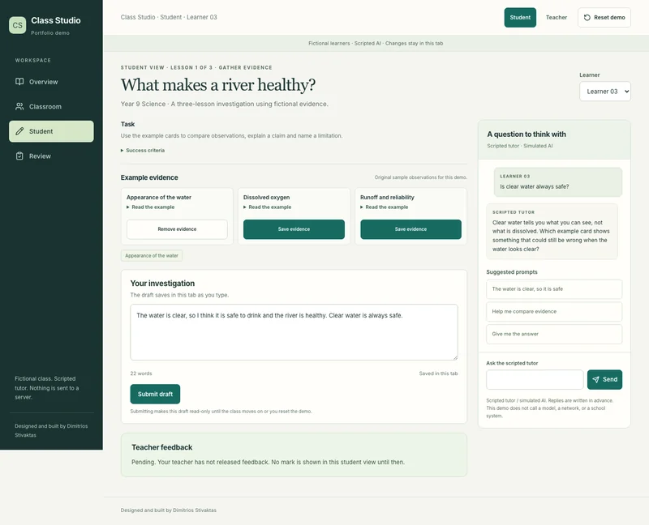

Enlarge screenshot.Source: Class Studio
Saved evidence beside a developing explanation
Read the fictional source cards, save the useful evidence and write an explanation. The same investigation continues through three lesson stages.
Teacher control. The teacher decides when to advance the lesson. Drafts save in the current tab; storage limitations are made visible.
Read an example, save it as evidence and edit the investigation.